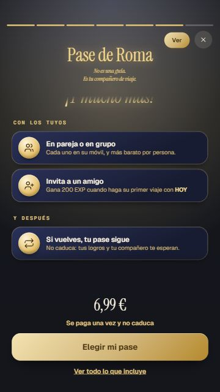
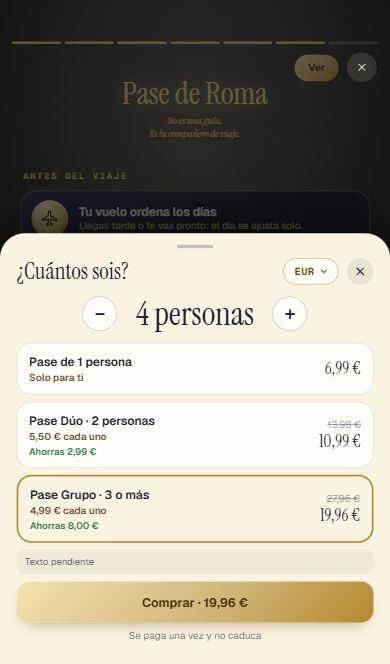
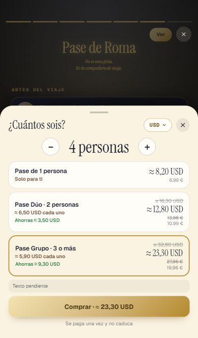
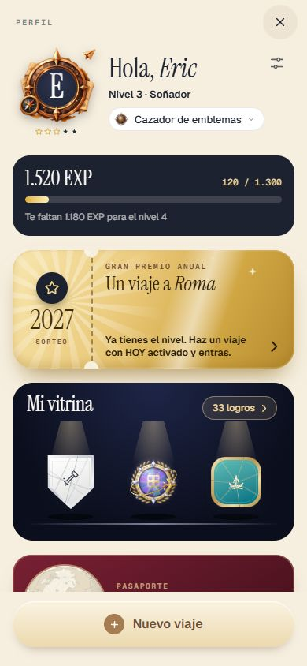
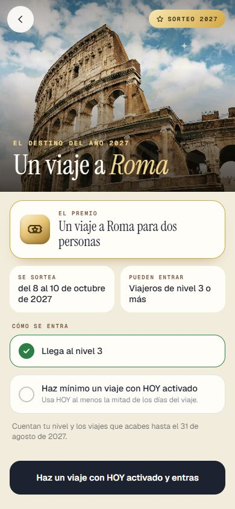
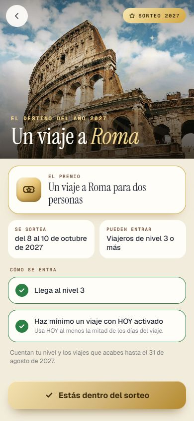

Repaso de la Tanda 10P
El pase, la moneda, el sorteo y el perfil. Marca cada punto en tu teléfono cuando lo hayas comprobado (se guarda en este navegador).
0 · Antes de empezar
1.1 · La historia de prueba
1.2 · La película en el móvil
1.3 · La puesta de sol y lo de mañana en HOY
1.4 · La lista del pase
1.5 · +200 EXP por invitar
1.6 · El sorteo
1.7 · El precio en la moneda del viajero
1.8 · El perfil y el pasaporte
2 · La prueba
3 · El informe
Todas las capturas
10p_hoy_atardecer10p_hoy_historia_cerrada10p_hoy_historia_prueba10p_hoy_manana10p_pase_01_final_390x66410p_pase_02_final_430x932
10p_pase_03_final_360x64010p_pase_04_invita_a_un_amigo10p_pase_05_ver_otra_vez_empieza
10p_pase_06_compra_EUR10p_pase_06_final_EUR10p_pase_07_compra_MXN10p_pase_07_final_MXN
10p_pase_08_compra_USD10p_pase_08_final_USD10p_pase_09_compra_COP10p_pase_09_final_COP10p_pase_10_hoja_moneda10p_pase_11_todo_lo_que_incluye10p_perfil_1_billete_sin_nivel
10p_perfil_2_billete_falta_viaje10p_perfil_3_billete_dentro10p_perfil_4_pasaporte_tarjeta10p_perfil_5_pasaporte_dentro10p_sorteo_1_pagina_sin_nivel
10p_sorteo_2_pagina_falta_viaje
10p_sorteo_3_pagina_dentro10p_sorteo_4_pagina_con_bases10p_sorteo_5_campana